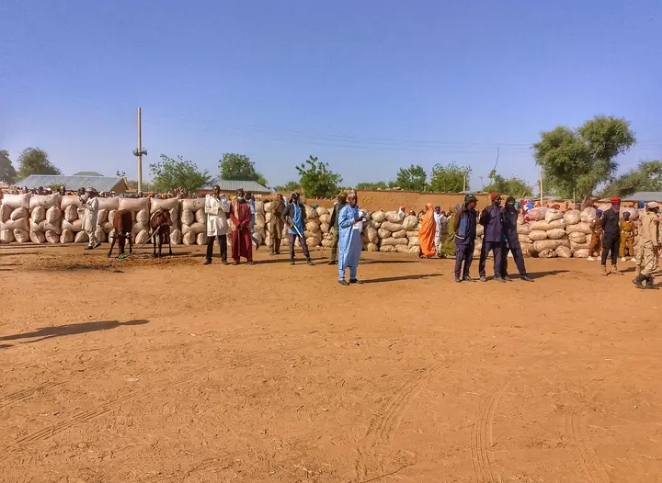
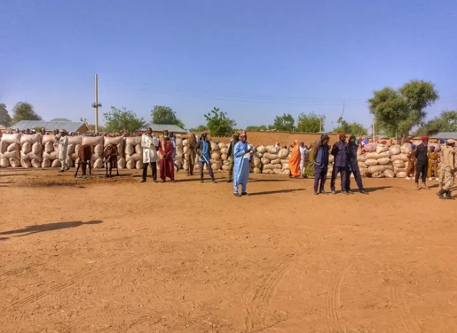

The Annual Festival Celebration at Nangere, Yobe State
The Collection of Zakkat and Waqaf
In case of the history of Zakat in Tikau Emirate, it can be traced back
to the advent of Islam to the Emirate through Kanem Borno Empire; when
the region had an organized political system which was governed based on
Islamic system. During which Zakat was the major source of revenue to
the Empire as well as an instrument of its fiscal and social policies.
Therefore, the institution of Zakat existed in the area which is known
today as Tikau Emirate long before the colonialism, through the records
of zakat administration and distribution are not fully archived in the
Emirate.
Zakat and Waqf are closely related; the fundamental difference between
the two is that the former is mamdatory while the latter is voluntarily,
but they are usually managed by the same institution. Tikau Emirate
Zakat and Wagf committee came into being in 2002; as a result of the
Executive directives by the first Civilian Governor of Yobe State Alhaji
Bukar Abba Ibrahim, FNIQS, who directed all the fourteen Emirate
Councils in the same state to establish a committee for Zakat and waqf
in their various domains. In compliance with the said Executives
Directives, His Royal Highness the Mai of Tikau, Alhaji Muhammadu
Abubakar Ibn Grema constituted abd inaugurated a seven man high powered
committee with him as the Grand Patron and Galadima of Tikau "Alhaji
Sambo Sarki" as Chairman, together with six other prominent members from
the Emirate to implement the collection and distributio of Zakat, and
also to lanuch an annual Waqf collection in the Emmirate.
| S/No. | Name | Title | Position |
| 1. | His Royal Highness, Alhaji Abubakar Muhammadu Ibn Grema | Mai Tikau | Grand Patron |
| 2. | Alhaji Muhammadu Sambo Sarki | Galadima | Chairman |
| 3. | Alhaji Samaila Musa | Wali | Secretary |
| 4. | Malam Adamu Talba (Liba) | Kachalla | Secretary Shua |
| 5. | Alhaji Muhammad Audu Kukuri | Member | |
| 6. | Abdulkareem Inuwa Tikau | Member | |
| 7. | Sheikh Ibrahim Suleiman | Chairman Shua | |
| 8. | Sheikh Ibrahim Mairimi | Vice Chairman Shura |
Collection of Zakat and Waqf in Tikau Emirate
One of the key Mandates of Tikau Emirate Zakat and Waqf committee is proper collection of all sort of Zakatable wealth across the Emirate. In fulfilment of this mandate, the committee has developed two strategies for Zakat collection which are:
Organized Annual Collection
This refers to the collection of annual Zakat of farm products, animals and other Zakatable wealth from well-meaning individuals of the Emirate within a specified period. usually the collection is conducted via the village heads across different part of the Emirate. At the centre of the committee categorized and itemized whatever is collected before central distribution at the Emir's Palace.
Open Ended Collection
This also refers to the collection of Zakat of farm products, animals, and other Zakatable wealth from well-meaning individuals of the Emirate at any given time, since Zakat has no specific due date. This can be directly to the secretariat of the committee or via the village heads across the Emirate. incase of Waqf, the committee used to organize an annual launching for its collection, usually one of the prominent and well to do sons of the Emirate is selected as a chief launcher for the year, to be supported by some other personalities as co-launchers from within and outside the Emirate council.
Distribution of Zakat and Waqf in Tikau Emirate
The committe has developed two ways of distributing Zakat of all sort. they are:
Annual Public Distribution of Zakat
This refers to disbursing what has been collected as Zakat during the annual collection exercise to the categories of eligible people as mentioned by Shari'ah annually; with the aim of encouraging people to give out Zakat. This disbursement comes few days after the annual collection exercise at Emir's palace.
Day to Day Distribution of Zakat
This refers to concurrent disbursement of collected Zakat items to eligible people at inttermittent intervals, usually on request as a result of critical social or health condtion. This disbursement has no limit of time and place. Usually, the committee verifies eligible people and provides them with what is available in Zakat fund either in cash or kind.
Activities of Zakat and Waqf Committee in Tikau Emirate
The Zakat and Waqf committee of Tikau Emirate has introduced many islamics programmes on which Waqf funds are channeled. This includes;
- The Establishment of Islamiyya Schools
- The Organizing Routine Da'wah Exercise
- The Training and Seminar Programmes for Preachers and Imams
- Assiting Internally Displaced Person (IDPs)
- Development of Waqf Property
- Community Development services in Tikau Emirate
- Distribution of Relief Materials to Disaster Victims
- The Health Care Services
- Distribution of Hijabs at a subsidized Rate
- Granting Interest-Free Loan
 

The Tree Planning Campaign

Tree planting is an important method for carbon sequestration, as trees
absorb carbon dioxide during photosynthesis. Tree planting initiatives
in Nigeria also aim to enhance biodiversity, restore degraded lands, and
support rural livelihoods.On the 5th of June 2014, we took a bold step
towards environmental conservation by launching a purposeful
tree-planting project in Fika, a community in Yobe State, Northern
Nigeria. This initiative, marking world environment day, was a
collaboration with across Communities Initiative and aimed to plant over
200 trees; an effort that seeks to green the community and raise
awareness on the urgent need for environmental stewardship.This
gathering was not just a tree-planting exercise; but proved to be a
community-driven movement emphasizing the role of individual action in
developing a sustainable future. Local community leaders, environmental
advocates, and residents came together, unified by a shared overall
mission: to combat desertification, promote sustainable development, and
enhance biodiversity in the region. It is safe to say that several
“plant moms and plant dads” were created that day!
BARAKAU (CULTURAL DISPLAY)

Barakau is a Kare-Kare Cultural activity that marks the end of the year
harvest, it is a festival activity during which relatives and friends
are invited to share the merriment of the celebration. Barakau like many
other Kare-Kare cultural activities were celebrated at the end of
harvesting season. The celebration in merry making festival after
harvest. But today Barakau occasion has been centralized at Degubi or
Jalam town. It serves as a forum for showcasing the rich Kare-Kare
cultural tradition, affairs and customs. Traditional Weapons and war
equipment like shield, bow arrow, spears; Machetes, sword and the likes
are also displayed. Characteristics of Barakau among Kare-Kare cultural
activities remain the same in times of the celebration. Highlight of the
occasion includes cultural dances and songs which consist among others
Gumi, Shira, Shela, Algeta, Doga Yaro, Kanjau, Ganga, Shafara Lela, and
many others.
SAWAKA (CULTURAL DISPLAY)
Sawaku is another Kare-Kare performance, which serve as starting pointfor eating newly harvested crops, nobody is allowed to eat from this new crops until the Head of Village starts. This festival usually takes place in November. The elder of the Ward Head (Bulama) will kill a he goat (male) and eat at the outskirts in western part of the village; they use a he goat because it is believe that a he goat is good in fetching the devils. And the reason why they took it to the outskirts because they believe that there is evil spirits. In the evening, horsemen were allowed to go to any body’s farm and pick crops they may use during the night free of charge. From that very time onward, everybody is allowed to eat the newly harvested crops.When Kare-Kare accepted Islam as religion, they follow the teachings of Islam in their various communities by replacing it with ZaKat for the new harvested crops. This festival is practice in the Kare-Kare communities by the non-Muslim. Islam always enjoys what is good and forbid what is evil. The activities of the festivals that contradicts Islam such as killing of he goat believing that is good for fetching the devils, restraining people from eating their newly crop until the Head of Village starts, found no more in the Kare-Kare community by the coverts.
A DURBAR FESTIVAL
A Durbar Festival is also celebrated as an occasional festival in Tikau Emirate. This Festival usually marks an important event, such as Eid el Kabir, Eid el fitri or a visit by highly respected personality. During this festival, the Emir and his entourage parade on horses, accompanied by Musicians, and ending at the Emir's palace. Thus, it is considered tourist attraction.
KAMTI (CULTURAL DISPLAY)
Kamti is a Kare-Kare cultural activity that marks the end of the year
harvest, it is a festival during which relatives and friends are invited
to share the merriment of the celebration. Kamti like any other
Kare-Kare cultural activities, it has originated from Gudi and it is
celebrated at intervals of three (3) years that is after every three
years Kamti is celebrated.The celebration usually took place in
November. It is merry-marking festival celebrated immediately after
harvest. But today Kamti is celebrated every year and on different
Kare-Kare groups such as
Kare-Kare Gudi, Kare-Kare Damagum, Kare-Kare Maje, Kare-Kare Dagare,
Kare-Kare Ningi, Kare-Kare Badawa, Kare-Kare Jufulum etc.The mass migration from Gudi to new settlement resulted in making
different Kare-Kare groups autonomous, especially to do with Kamti
celebration. The Kare-Kare Maje and Jufulum celebrate Kamti every year
instead of once in three (3) years, but Kare-Kare Ningi and Badawa,
Dokto still keep to system of after three (3) years. Characteristic of
Kamti remain the same inspite of difference in times of the celebration.
Kare-Kare community of Juhulum were the first group to stand in October
middle, it last for three days and on the last day goats were kill,
Mishi (local beer)
is served free for those who came to take. Group of dancers like
Amzara, Bare, Dudurotetira etc are displayed.The most important
thing to consider in this Kamti is that, there is usually a drum called
“Gulo” when the Kamti time has come, they beat it on Friday
night, the Gulo will not see the ends of next harvest, that is why it is
beaten by an old man. There is also belief which is mystic in nature to
the Kare-Kare people that on the last day of Kamti, when the traditional
ruler celebrate his own, there must be rainfall on that day and this
belief that, the rainfall is because of the celebration.With the
acceptance of Islam by the Kare-Kare in their community, some
traditional festival and belief mentioned above were found no more
practice. Islam is a religion that changes the traditions that
contradicts Islam by its converts. The traditions remains in the hands
of Non-Muslims in the Kare-Kare communities.
WA'OTO BOBANO (CULTURAL DISPLAY)
This is another festival or cultural activities performed by Kare-Kare during the cause of growing season, in August more especially the Ward Head (Bulama) declares a free day work for the cause of Wo’oto Bobano (special food cook day). In this day, some special food popularly known as ‘Uru ki Buma’ was prepared in each and every house of the affected village, this is because the time of these festival also varies. These special food means a food that were not usually cooked unless occasionally. The Head of family together with his members will gather all the agricultural tools in the house, arranged them in a straight line and placed on each took a piece of Uru (food). He will then utter some prayers that all creatures killed by the farm cultivation might not be counted against them because they did not do it intentionally. By doing so, according to their traditional believes, the family became free from any harm done to any creature during the farming period. This was done inform of Zakat which Islam places. The festival or cultural activities performed by Kare-Kare in their community during the cause of growing season found no more practice by the converts except non-Muslims and more among Muslims.
Baaraa Ma Jalam (Jalam Festival)
This is a cultural display by the karai-karai people, it takes place
between January or March. There were some of the Karai-Karai annual display of traditional activities.


Salah Celebration
We have two types of Salah Celebration, which are:
Eid al-Adha and Eid al-Fitr
Eid al-Adha is a festival celebrated by Muslims in Nigeria and all over
the world on the 10th day of the Hijri month of Dhu al-Hijja. It is one
of two official holidays celebrated in Islam. It honors the willingness
of Prophet Ibrahim (A.S) to sacrifice his son Ismail (Ishmael) as an act
of obedience to Allah’s Command.It is referred to as
“Eid Al-Kabir”, or in Hausa Babbar Sallah . Muslims in Nigeria
including the Kare-Kare people celebrates it with worship that includes
going to the prayer ground in the morning, slaughtering sacrifices
mostly in the form of male sheep i.e. ram (a core activity of the day),
and sharing meals with family and friends. The aim is to share happiness
with other Muslims and, in some cases, non-Muslim neighbors.Males and
Females of all ages visit the prayer ground to perform the Eid prayer.
Most of them wears new clothes to show joy and happiness, as this is one
of the year’s most important days. They perform this prayer by observing
two Rakah’s after the Imam and then staying on the prayer ground to
listen to the sermon from the imam, also attended by kings and other
dignitaries. A gun is fired into the sky from the royal entourage to
mark the end of the prayer.After completing the prayer and the sermon,
the imam slaughters his sacrifice, often a male sheep. This sheep is
present at the prayer round before the prayer begins. After the
slaughtering, the Muslims return to their homes to slaughter theirs in
order to draw closer to God and celebrate. Most Muslims slaughter sheep,
which are very expensive in this season. A few of the affluent slaughter
cows and camels.After the Eid al-Adha prayer ends, the Emirs and chiefs
in Kare-Kare, Northern Nigeria in general come out as the head of the
crowd of worshippers and others watching the proceeding, riding adorned
horses. It is also known as the Durbar Festival. A horse race follows in
front of the emir. Eid al-Fitr marks the end of Ramadan, the
Islamic holy month of fasting. Eid-al-Fitr typically falls on the first
day of the month of Shawwal in the Islamic Calendar. The celebration
lasts for one to three days.